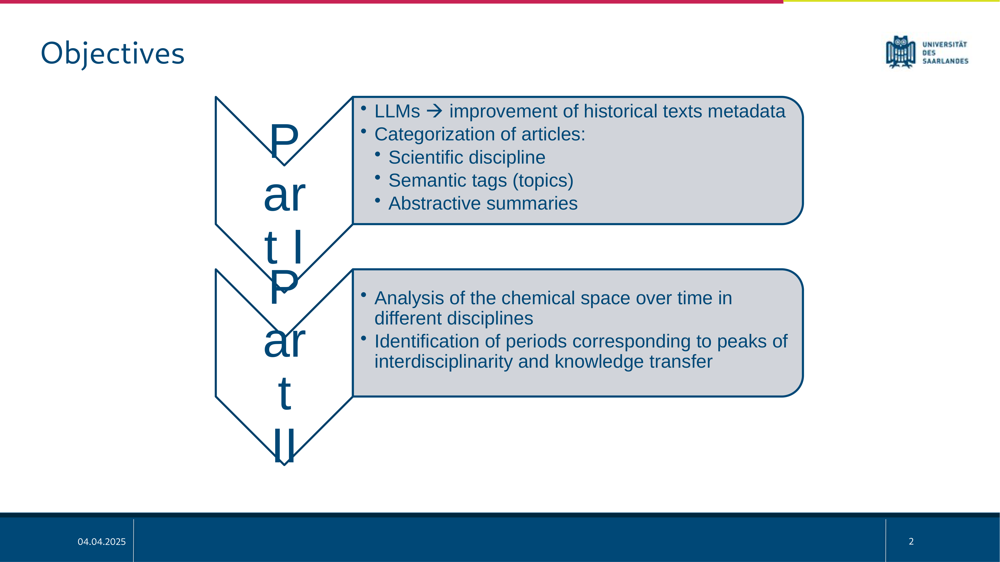
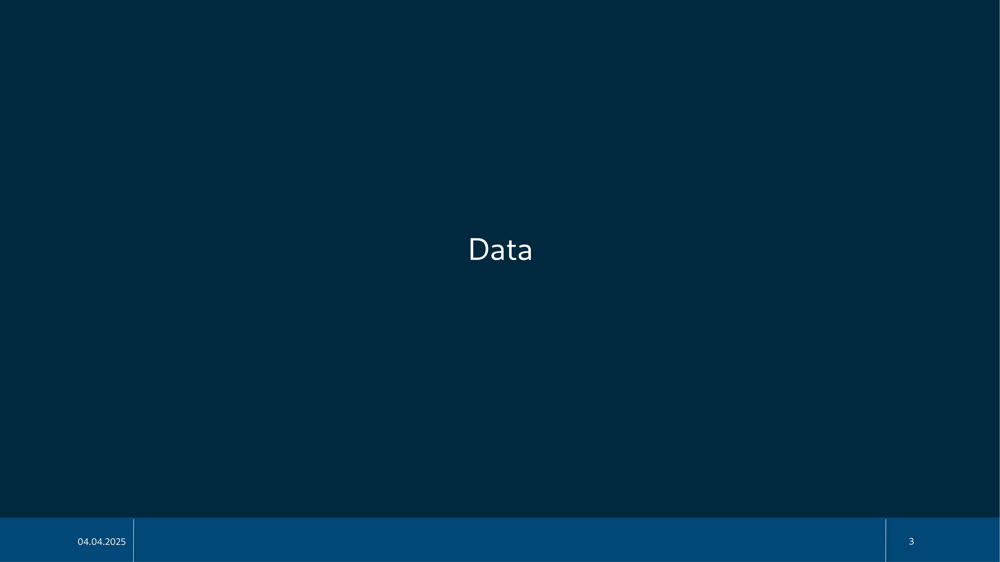
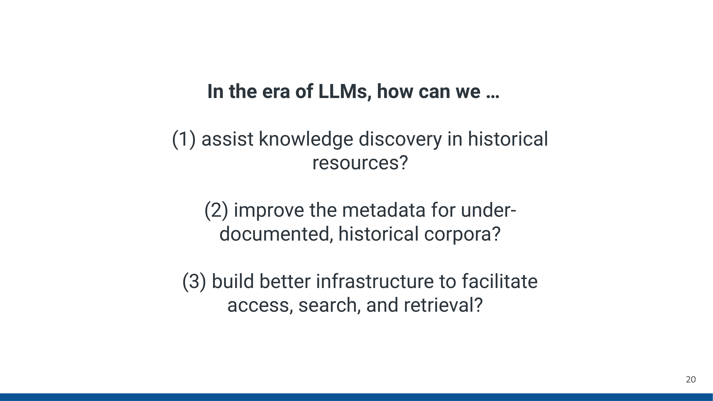
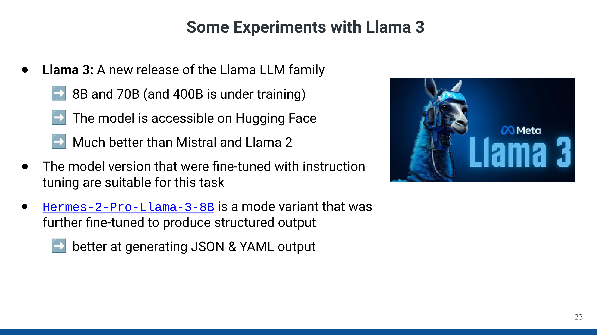
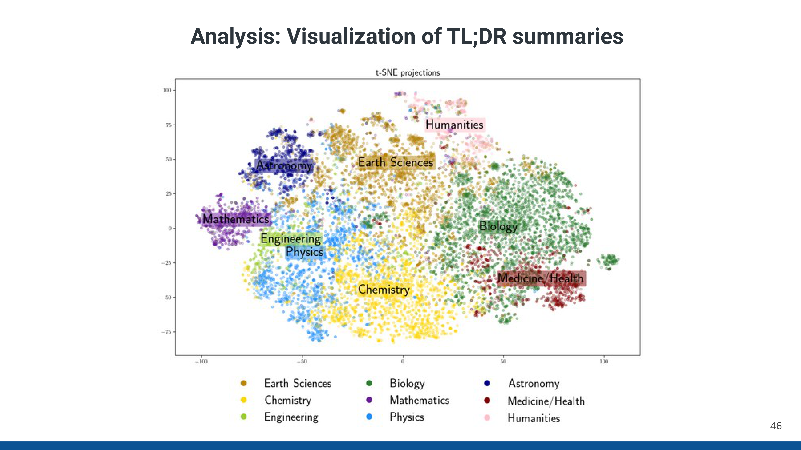
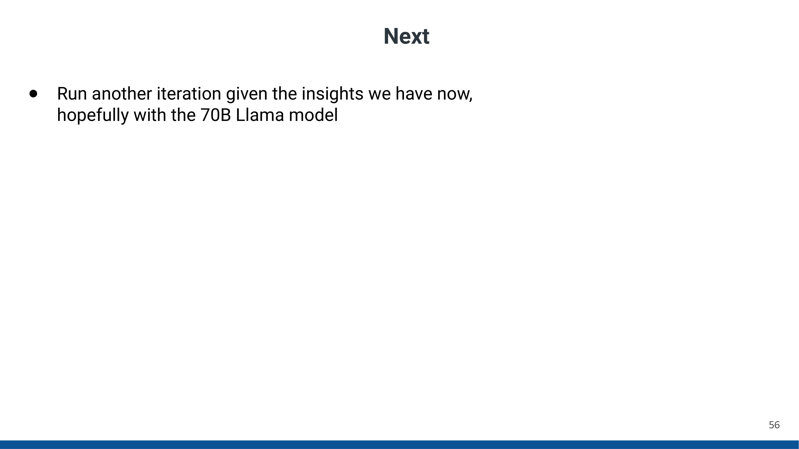
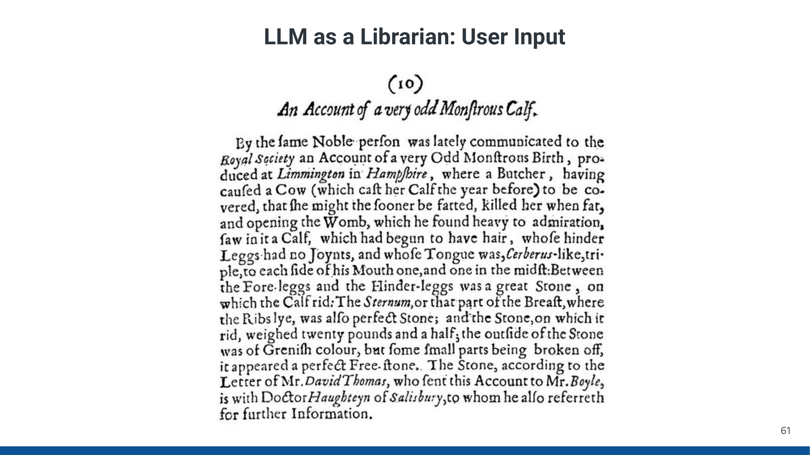
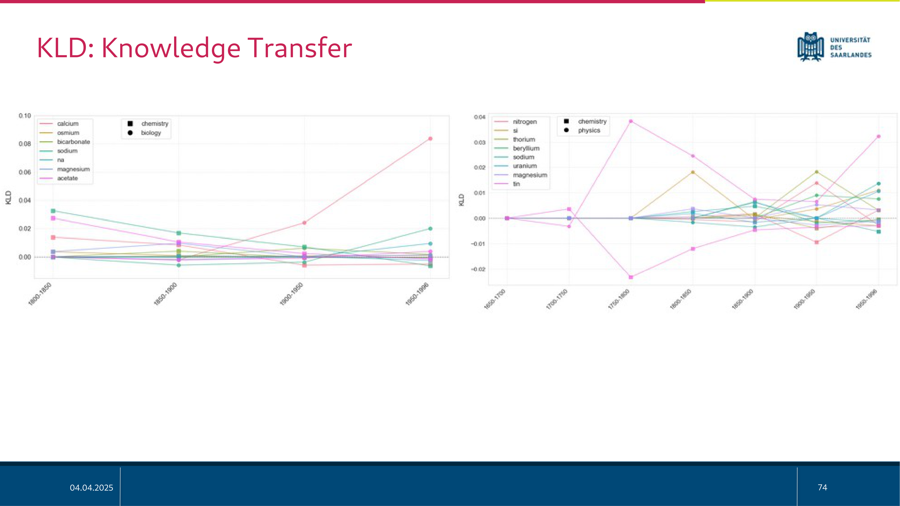

16 Leveraging Large Language Models for Metadata Enrichment and Diachronic Analysis of Chemical Knowledge in Historical Scientific Texts
Overview
Diego Alves and Sergei Bagdasarov, with significant contributions from Badr M. Abdullah, have pioneered a comprehensive approach to enrich metadata and conduct diachronic analysis of chemical knowledge within historical scientific texts. This endeavour primarily addresses two objectives: first, enhancing the metadata of historical documents through Large Language Models (LLMs), specifically focusing on article categorisation by scientific discipline, semantic tagging, and abstractive summarisation. Secondly, the project analyses the evolution of the chemical space across various disciplines over time, identifying periods of heightened interdisciplinarity and knowledge transfer.
The team meticulously processed the Philosophical Transactions of the Royal Society of London, a diachronic corpus spanning from 1665 to 1996, comprising nearly 48,000 texts and 300 million tokens. Employing the Hermes 2 Pro Llama 3 8B model, the authors crafted a system prompt that instructed the LLM to act as a librarian, generating revised titles, five key topics, concise TL;DR summaries, and hierarchical scientific classifications (primary discipline and sub-discipline) in a structured YAML format. This LLM-driven metadata generation achieved remarkable validity: 99.81% of outputs conformed to the specified format, and 94% of discipline predictions aligned with predefined categories.
For the diachronic analysis of chemical knowledge, Alves and Bagdasarov focused on chemistry, biology, and physics. They utilised ChemDataExtractor, a Python module, to identify chemical terms, applying a two-stage extraction process to mitigate noise. Kullback-Leibler Divergence (KLD) served as the core analytical tool, enabling both independent tracking of chemical space evolution within each discipline and pairwise comparisons between disciplines across defined time windows. Their findings reveal significant shifts in disciplinary focus over centuries, including a pronounced peak in chemical articles during the late 18th-century chemical revolution. KLD analysis further illuminated specific chemical substances driving disciplinary change and identified instances of knowledge transfer, where elements transitioned in distinctiveness from one field to another. Visualisations, such as t-SNE projections of summaries, further illustrate the evolving relationships and overlaps between scientific domains. Future work aims to test additional LLMs, refine evaluation metrics, and expand the scope of interdisciplinary analysis.
16.1 Introduction and Research Objectives

Diego Alves and Sergei Bagdasarov have embarked upon a comprehensive project, titled “Leveraging Large Language Models for Metadata Enrichment and Diachronic Analysis of Chemical Knowledge in Historical Scientific Texts.” This work also involved the significant contributions of Badr M. Abdullah, an expert in Large Language Models.
The project unfolds in two distinct yet interconnected parts. The first part explores the application of LLMs to enhance the metadata associated with historical texts, particularly within diachronic corpora. This involves the systematic categorisation of articles by scientific discipline, the assignment of semantic tags or topics, and the generation of abstractive summaries.
The second part of the study presents a detailed case study. Here, the authors analyse how the chemical space evolves across different scientific disciplines over time. A primary objective involves identifying specific historical periods that exhibit peaks of interdisciplinarity and significant instances of knowledge transfer between fields.
16.2 The Philosophical Transactions Corpus for Diachronic Scientific Inquiry

Central to this research lies an interest in understanding the diachronic evolution of scientific English, particularly how it transformed into an optimised medium for expert-to-expert communication. Beyond this linguistic focus, Alves and Bagdasarov also analyse phenomena such as knowledge transfer and identify influential papers and authors throughout history.
The Philosophical Transactions of the Royal Society of London serves as the primary corpus for this investigation. First published in 1665, this esteemed journal holds the distinction of being the oldest scientific journal in continuous publication, maintaining a high reputation to this day. Crucially, it played a pivotal role in shaping scientific communication, notably by establishing the peer-reviewed paper as a fundamental means for disseminating scientific knowledge.
Within this extensive corpus reside numerous influential contributions. The 17th century, for instance, saw Isaac Newton’s seminal “New Theory about Light and Colours” published in 1672. Moving into the 18th century, Benjamin Franklin’s “The ‘Philadelphia Experiment’ (the Electrical Kite)” marked another significant entry. Later, in the 19th century, James Clerk Maxwell’s “On the Dynamical Theory of the Electromagnetic Field” (1865) further enriched the collection. Whilst these landmark papers underscore the journal’s scientific rigour, the corpus also contains more curious articles, such as “Monfieur Autour’s Speculations of the Changes, likely to be discovered in the Earth and Moon, by their respective Inhabitants,” which describes lunar inhabitants. Nevertheless, the project’s interest lies not in the scientific validity or fact-checking of these papers, but rather in their linguistic and historical characteristics.
16.3 Characteristics and Pre-existing Metadata of the Royal Society Corpus

The research team leverages the latest iteration of the Royal Society Corpus, specifically RSC 6.0 Full. This extensive dataset encompasses over three centuries of scientific communication, spanning from 1665 to 1996. It comprises approximately 48,000 distinct texts, accumulating to a substantial 300 million tokens.
The corpus already incorporates various metadata attributes, including author, century, year, volume, Digital Object Identifier (DOI), journal, language, and title. Previously, researchers applied Latent Dirichlet Allocation (LDA) topic modelling to infer fields of research categories and classify the diverse papers. However, this LDA approach often yielded mixed classifications, blending distinct disciplines, their sub-disciplines, and even text types, such as “observations” and “reporting.” Consequently, a clear need emerged to enhance this existing metadata and generate additional, more refined attributes, prompting the authors’ integration of Large Language Models.
16.4 Large Language Models for Information Management and Knowledge Organisation

Large Language Models offer diverse applications for information management and knowledge organisation, encompassing text clean-up, summarisation, and information extraction. Crucially, they facilitate the creation of knowledge graphs and enhance access and retrieval mechanisms through effective categorisation.
Alves and Bagdasarov specifically tasked the LLM with assuming the role of a librarian. This involved reading and analysing article content and its historical context. The model then suggested alternative, more reflective titles for the articles. Furthermore, it generated concise three-to-four-sentence TL;DR summaries, capturing the essence and main findings in simple language suitable for a high school student. The LLM also identified five main topics, conceptualised as Wikipedia Keywords, for thematic grouping. A hierarchical classification system required the model to assign a primary scientific discipline from a predefined list—including Physics, Chemistry, Environmental & Earth Sciences, Astronomy, Biology & Life Sciences, Medicine & Health Sciences, Mathematics & Statistics, Engineering & Technology, and Social Sciences & Humanities—and a suitable second-level sub-discipline, which could not be one of the primary disciplines.
For this undertaking, the team employed Llama 3, specifically the Hermes-2-Pro-Llama-3-8B variant, which possesses 8 billion parameters. This model had undergone instruction-tuning and further fine-tuning to excel at producing structured output, particularly in JSON and YAML formats. The system prompt meticulously defined the LLM’s role: “Act as a librarian and organize a collection of historical scientific articles from the Royal Society of London, published between 1665 and 1996.” Its objective was to “read, analyze, and organize a large corpus of historical scientific articles… The goal is to create a comprehensive and structured database that facilitates search, retrieval, and analysis…” The input description clarified that the model would receive “OCR-extracted text of the original articles, along with some of their corresponding metadata, including title, author(s), publication date, journal, and a short text snippet.” An example input, featuring Isaac Newton’s “A Letter of Mr. Isaac Newton…” from 1672, demonstrated the expected text snippet. The prompt then provided an example of the desired YAML output, showcasing a revised title (“A New Theory of Light and Colours”), relevant topics (e.g., “Optics,” “Refraction”), a TL;DR summary, and the hierarchical scientific classification (“Physics” as primary, “Optics & Light” as sub-discipline). To ensure data integrity, the prompt explicitly mandated that the output must be a valid YAML file, containing no additional text.
16.5 Outcomes and Interpretations of LLM-driven Metadata Generation

The LLM-driven metadata generation process yielded highly valid outputs. A remarkable 99.81% of the generated files conformed to the specified YAML format, with only a negligible 0.19% exhibiting invalid structures. Furthermore, the model demonstrated strong accuracy in discipline prediction; 94% of the assigned scientific disciplines fell within the predefined set of nine categories.
Nevertheless, the system did exhibit some minor anomalies or “hallucinations.” For instance, the LLM occasionally rendered “Earth Sciences” instead of the full “Environmental & Earth Sciences” and, in some rare cases, invented entirely novel categories, such as “Music.” Moreover, the model sometimes inadvertently included the numerical index as part of the discipline string, for example, “3. Earth Sciences.” Despite these minor issues, the majority of papers received correct assignments.
Alves and Bagdasarov’s analysis of the distribution of files per discipline revealed that Biology and Life Sciences accounted for the highest number of articles, closely followed by Physics and Chemistry. Examining the Royal Society articles over time provided compelling insights into disciplinary evolution. Prior to the late 18th century, a more homogeneous distribution of disciplines characterised the publications. However, the late 18th century witnessed a distinct peak in chemical articles, a phenomenon directly correlating with the chemical revolution. Subsequently, chemistry solidified its position as a main pillar of the Royal Society. From the 19th century onwards, Biology, Physics, and Chemistry collectively emerged as the three dominant fields within the journal’s publications.
A preliminary visualisation of the TL;DR summaries, employing t-SNE projection, illustrated how different disciplines distribute within the semantic space. This projection revealed significant overlap between Chemistry, Physics, and Biology, with chemistry often situated centrally. Conversely, Humanities, Astronomy, and Mathematics formed more isolated clusters, indicating less semantic proximity. This initial analysis underscores the potential for future diachronic studies to precisely trace the shifts and overlaps between these disciplines over extended periods.
16.6 Diachronic Analysis of Chemical Space: Methods and Tools

For the diachronic analysis of the chemical space, Alves and Bagdasarov concentrated solely on three disciplines most frequently encountered within the corpus: chemistry, biology, and physics. To extract chemical terms, they employed ChemDataExtractor, a Python module specifically designed for the automatic identification of chemical substances. The application of this tool involved a two-stage process: an initial pass across the entire text generated considerable noise, necessitating a subsequent refinement. Consequently, a second application of ChemDataExtractor, this time targeting only the list of previously extracted substances, significantly reduced the extraneous output.
Kullback-Leibler Divergence (KLD) served as the core analytical method. KLD, a measure of relative entropy, enables language models to detect changes across situational contexts. It quantifies the additional bits required to encode a given dataset (A) when utilising a sub-optimal model derived from another dataset (B). The authors applied KLD in two distinct ways. Firstly, they conducted a diachronic analysis within each discipline independently, tracing the evolution of the chemical space along the timeline for chemistry, physics, and biology. This involved comparing a 20-year period preceding a specific date with a 20-year period following it, then iteratively sliding the comparison window by five years along the timeline. Secondly, they performed pairwise interdisciplinary comparisons, specifically between chemistry and physics, and chemistry and biology. This latter analysis relied on 50-year periods of the Royal Society Corpus.
16.7 Findings from Diachronic Analysis of Chemical Space

The Kullback-Leibler Divergence (KLD) analysis yielded compelling results regarding the evolution of chemical space within each discipline. A striking similarity in trends emerged across chemistry, biology, and physics, with peaks and troughs occurring in roughly the same periods. Towards the end of the timeline, the KLD plots flattened considerably, and the overall KLD decreased, indicating reduced variation between future and past periods.
Alves and Bagdasarov’s further investigation focused on the pronounced KLD peak observed in the late 18th century, specifically between 1740 and 1816. KLD proved instrumental in pinpointing the specific chemical substances driving this period of significant change. In both biology and physics, one or two elements exhibited exceptionally high KLD values, effectively propelling the observed shifts. Interestingly, the same core elements appeared across chemistry, biology, and physics during this early period.
A distinct pattern emerged when examining the second half of the 19th century, from 1851 to 1896. Here, the graphs for biology and physics became considerably more populated, and the individual contributions of elements appeared far more uniform. Notably, biology began evolving distinctly towards biochemistry. Conversely, chemistry and physics increasingly focused on noble gases and radioactive elements, substances whose discoveries largely characterised the close of the 19th century.
Pairwise interdisciplinary comparisons, visualised through word clouds, further corroborated these findings. When contrasting chemistry and biology in the 20th century, the biology word cloud prominently featured substances associated with biochemical processes in living organisms. In contrast, the chemistry word cloud highlighted substances pertinent to organic chemistry, such as hydrocarbons and benzene. Comparing chemistry with physics revealed a greater emphasis on metals, noble gases, and various types of metals, including rare earth, semi-metals, and radioactive metals. These comparisons effectively elucidated the thematic divergences between disciplines.
Crucially, this pairwise analysis facilitated the detection of “knowledge transfer” instances. This phenomenon describes an element initially distinctive of one discipline in an earlier period subsequently becoming more distinctive of another. For example, tin, initially a hallmark of chemistry in the early 18th century, clearly shifted to become distinctive of physics by the late 18th century. Similar shifts were observed for other elements in the early 20th century. In the 20th century, elements becoming distinctive of biology consistently related to biochemical processes, underscoring the evolving interconnections between fields.
16.8 Concluding Remarks and Future Research Directions

In conclusion, Alves and Bagdasarov successfully employed a Large Language Model to enhance article categorisation and topic modelling within the corpus. Building upon the metadata generated by the LLM, they conducted a comprehensive diachronic analysis of the chemical space across three key disciplines: chemistry, biology, and physics. This work also encompassed an interdisciplinary comparison of the chemical space, revealing dynamic relationships between fields.
Nevertheless, considerable scope for future work remains. For the LLM-driven metadata generation, the authors plan to test other LLMs and conduct a more rigorous evaluation of the current results. Regarding the diachronic analysis, future efforts will focus on more fine-grained interdisciplinary analysis, experimenting with different diachronic sliding windows. Furthermore, the team intends to incorporate additional disciplines, such as comparing chemistry with medicine, and explore tracing the evolution of chemical space using surprisal as an analytical metric.